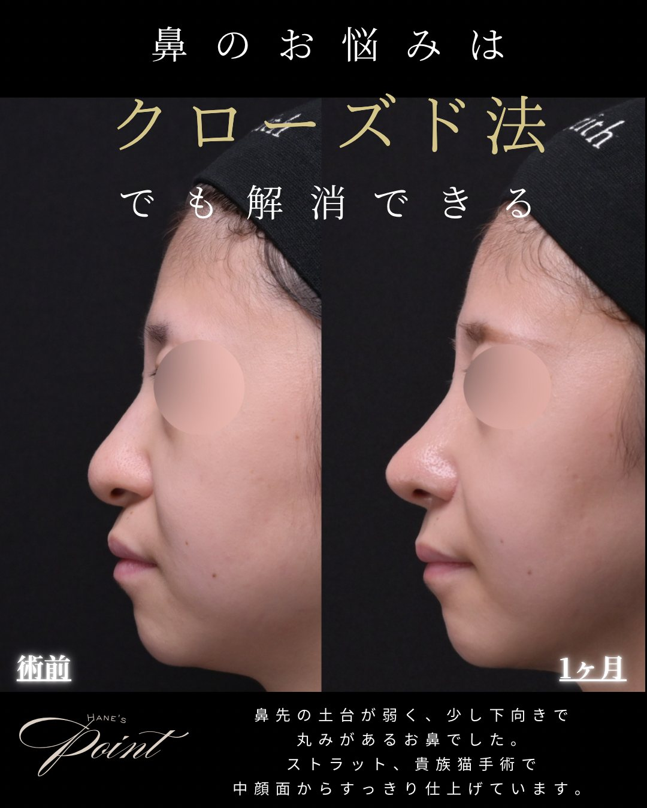

COLUMN
鼻整形専門コラム
福岡の鼻整形を専門とする医師が監修
団子鼻・鼻中隔延長・貴族手術・傷跡・ダウンタイムまで。クローズド法を専門とする当院が、鼻整形2,000件以上を担当する医師の視点で、症例を交えて詳しく解説します。
院長のInstagram ＠zetith_haneコラム記事
全7記事NEW 鼻中隔延長
鼻中隔延長
鼻中隔延長鼻中隔延長
鼻中隔延長とは？耳介軟骨と肋軟骨の違い・費用
鼻先を前・下に伸ばす鼻中隔延長。ストラットとの違い、素材の使い分け、費用・DT・リスクを解説。
2026.07.28NEW
（画像準備中）

貴族手術（画像準備中）
貴族手術
貴族手術とは？鼻の付け根を整える鼻翼基部形成
小鼻の脇〜鼻の付け根のくぼみをゴアテックス・肋軟骨で整える貴族手術。素材の違い・費用を解説。
2026.07.28NEW 術式ガイド
術式ガイド
術式ガイド基礎知識
鼻整形の術式まるわかりガイド
鼻尖形成・鼻中隔延長・隆鼻・貴族手術・鼻翼縮小まで、各術式と組み合わせ方を院長が解説。
2026.07.28人気 クローズド法 総合
クローズド法 総合
クローズド法 総合基礎知識
鼻整形のクローズド法とは？総合ガイド
オープン法との違い・受けられる施術・費用・ダウンタイム・症例まで、医師が総合解説します。
2026.07.27人気 団子鼻
団子鼻
団子鼻鼻尖・団子鼻
団子鼻をクローズド法で改善
鼻先が丸く見える原因と、鼻尖形成・軟骨移植・ストラットを組み合わせた改善を解説します。
2026.07.27 傷跡・バレない
傷跡・バレない傷跡・バレない
鼻整形は「バレる」？傷跡が残らない理由
バレる原因（傷跡・ダウンタイム・デザイン）と対策を、表に傷を残さないクローズド法の視点で解説。
2026.07.27 ダウンタイム
ダウンタイムダウンタイム・経過
鼻整形のダウンタイム完全ガイド
施術別の腫れ・経過、楽に過ごすコツ、仕事・メイク・運動の再開時期を解説します。
2026.07.27このカテゴリーの記事は準備中です。

監修医師｜鼻整形を専門とする美容外科医
羽根 和秀 （はね かずひで）／Zetith Beauty Clinic 福岡院 院長鼻整形を専門とし、これまでに2,000件以上を担当。皮膚の外側に傷を残さないクローズド法を軸に、医学的根拠に基づいた正しい情報をお届けします。
院長・クローズド法について鼻整形2,000件以上
の担当実績
院長自ら執刀する
丁寧なカウンセリング
一人ひとりに合わせた
オーダーメイド治療
Free Counseling
気になることは、まず相談を
記事を読んでも「自分の場合はどうなの？」という点は、診察でこそ分かります。あなたの鼻に合った方法を医師がご提案します。まずは無料カウンセリングでお気軽にご相談ください。